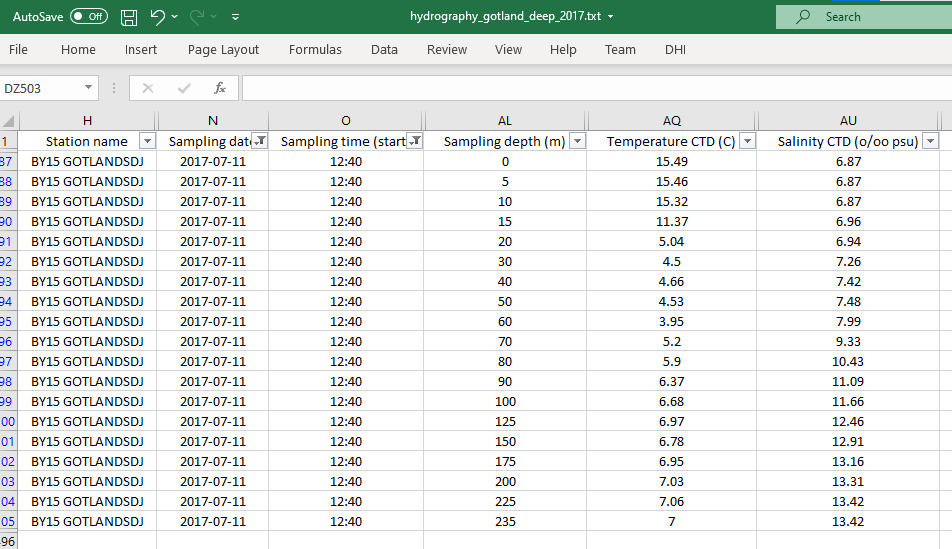
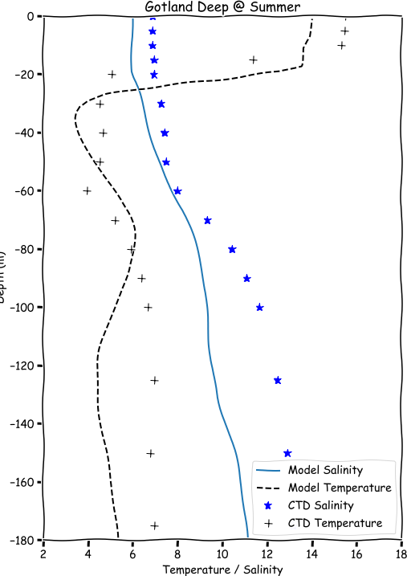

Final assignment#
The final assignment of the course is a fictive but realistic part of a 3D HD modelling project of the Baltic Sea.

Map from wikipedia.
The client is an NGO focusing on environmental issues, and they are interesting in understanding the changes in suitability of the Baltic Sea for reproduction of cod (Gadus Morhua).
The client can not do modelling themselves, but they have experience from other models, and know that it is non-trivial to model the hydrography of the Baltic Sea, with stratification caused by both temperature and salinity. This is why they want us to demonstrate that our model is able to capture the stratification, before they can trust that the model results can be used to quantify the environmental conditions for the cod.
There are two main tasks:
Qualitative validation of hydrographic vertical profiles in a central part of the Baltic Sea
Calculation of the total area of suitable habitat for cod.
1. Hydrograhic profiles#
The client have downloaded hydrograpic observations from the national monitoring agency for a station located in the central Baltic Sea for the years 2017 & 2018.
Station: BY5 (Gotland Deep) Latitude: 57.3N Longitude: 20.07E
Easting (UTM-32): 1165460 (m) Nothing (UTM-32): 6406530 (m)
The client have opened the file in Excel and it seems like the necessary observations are available in the dataset (along with a lot of other interesting data).

Our project manager have outlined the steps necessary to complete this task:
Create a map of the model bathymetry where the location of the sampling station BY5 is clearly indicated
Find 3d elements of water column closest to the station (x=1165460, y=6406530)
Extract vertical profiles of temperature and salinity
Visualize the modelled vertical profiles for the whole year (not sure exactly how, use your best knowledge!)
Compare with measurement data for one sampling occasion in winter and one during summer
Sketch of how a vertical profile model obs comparison could look like:

Below are some pandas code to get started on reading the observed data.
import pandas as pd
df = pd.read_csv("../data/final_assignment/hydrography_gotland_deep_2017.txt", sep='\t')
df[['Sampling date', 'Sampling time (start)']].head()
| Sampling date | Sampling time (start) | |
|---|---|---|
| 0 | 2017-12-16 | 08:00 |
| 1 | 2017-12-16 | 08:00 |
| 2 | 2017-12-16 | 08:00 |
| 3 | 2017-12-16 | 08:00 |
| 4 | 2017-12-16 | 08:00 |
df['Sampling date'].sort_values().unique()
array(['2017-01-09', '2017-02-10', '2017-03-15', '2017-04-24',
'2017-05-22', '2017-06-15', '2017-07-11', '2017-09-14',
'2017-11-11', '2017-12-16', '2018-01-28', '2018-04-18',
'2018-04-19', '2018-05-30', '2018-09-04', '2018-10-15',
'2018-11-09', '2018-12-05'], dtype=object)
2. Area of suitable environmental conditions#
The second task is to visualize the suitable areas for cod reproduction.
Cod eggs sink to the bottom and need a minium salinity of 10 PSU to remain bouyant and to survive. (A real project would also use the dissolved oxygen concentration). Cod spawning occurs in the spring, and we will use the mean value of April 2017 of the bottom layer salinity to visualize and quantify which parts of the Baltic Sea, that are potential areas for cod reproduction.
Again, our dear project manager have outlined the steps necessary to complete this task:
Get element ids of bottom elements
Extract bottom layer salinity
Find mean bottom layer salinity in april
Find elements with mean salinity >= 10 (note: original vs bottom layer index)
Create a plot where it is clearly indicated which parts of the Baltic Sea are suitable and which ones are not
Calculate the total area in km2 of the elements which meet the salinity criteria
What is the percentage of the bottom suitable for cod eggs?
Remarks#
Good luck, and remember:
Get help from your learning team (this is what you would do in a real project, it is not cheating)
If you get stuck, write in yammer
Submit the assignment in time
Review your peers solutions